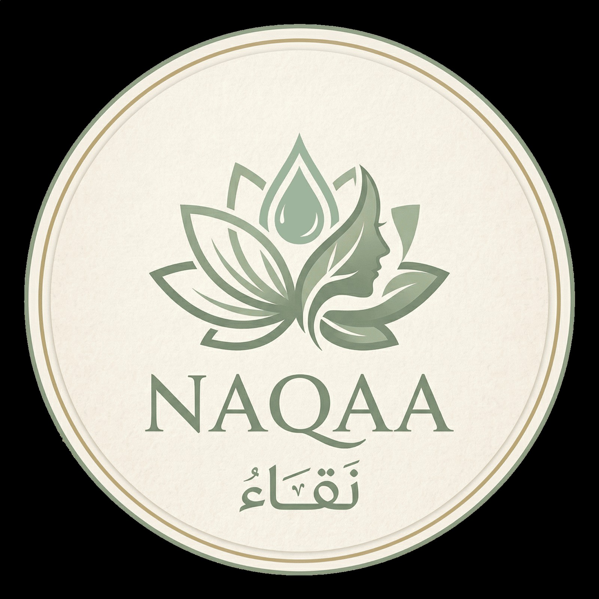
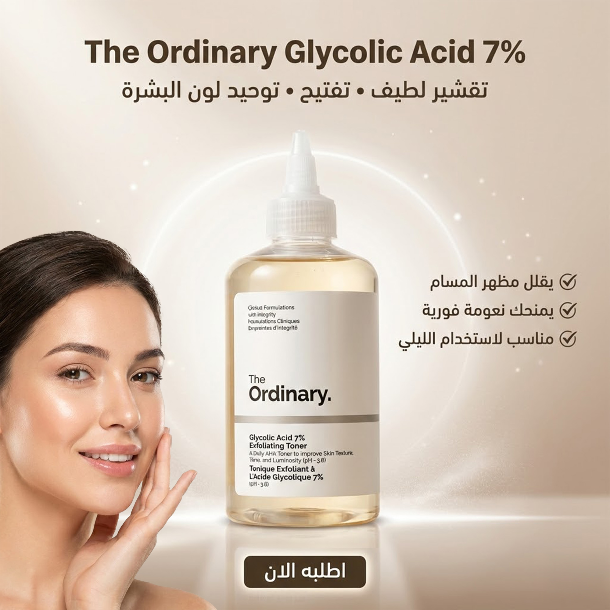
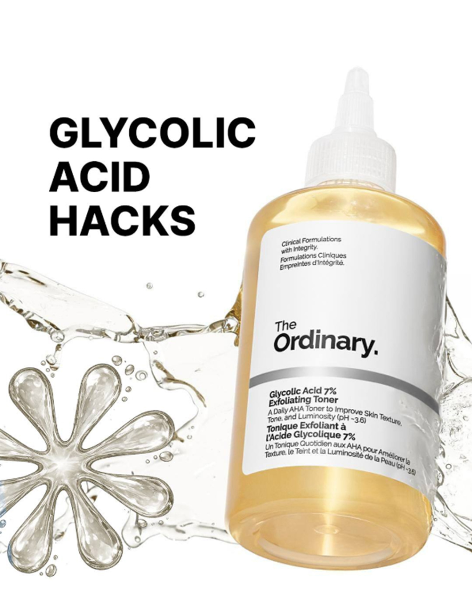
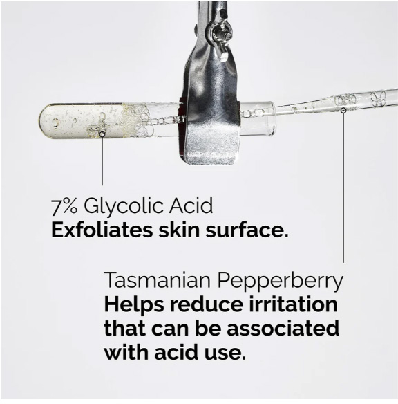
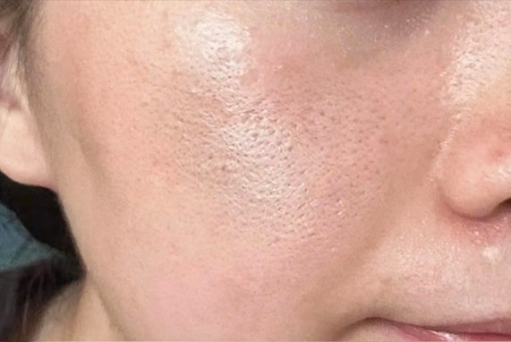
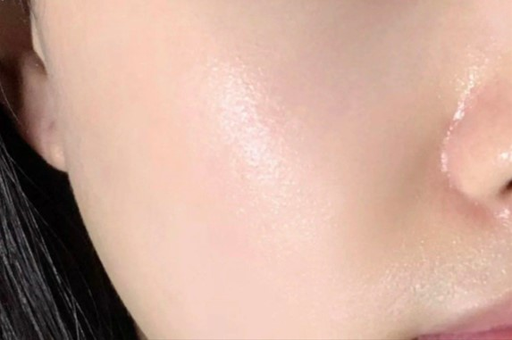
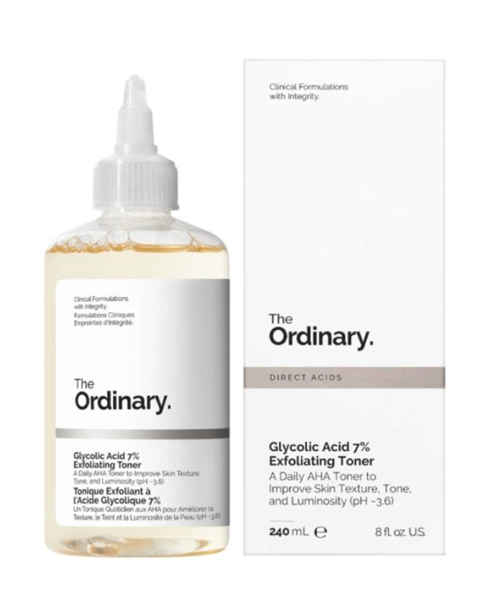
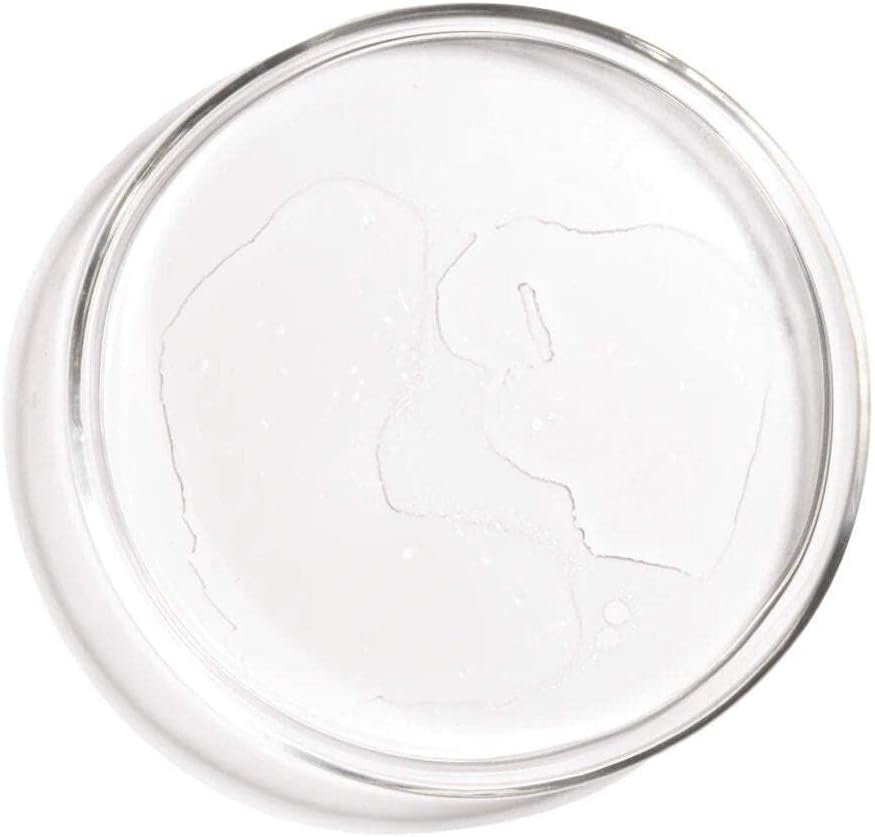
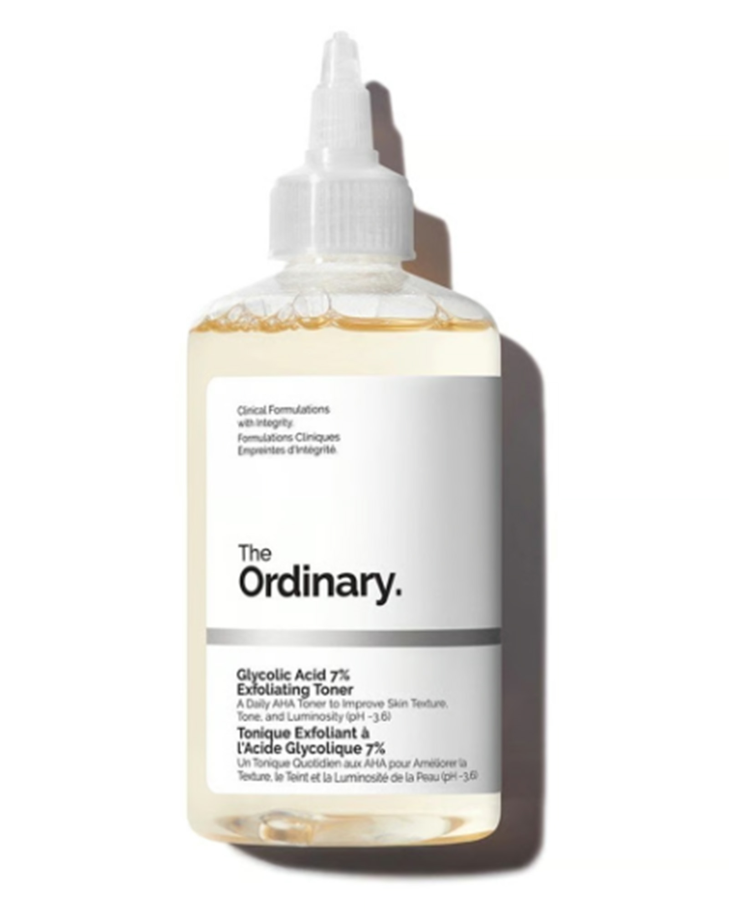

NaQaa - نقاءتخلصي من التصبغات، الجلد الميت، والمسام الواسعة خلال أسابيع قليلة مع المقشر اللطيف الأفضل عالمياً.

بشرتك تستحق أن تكون صافية ومشرقة يومياً

يزيل خلايا الجلد الميتة بلطف دون التسبب في تهيج البشرة.
يعمل على تفتيح التصبغات والبقع الداكنة للحصول على لون متجانس.
ينظف المسام بعمق مما يقلل من حجمها ومظهرها بشكل ملحوظ.
يمنح بشرتك نضارة ولمعاناً صحياً من الأسابيع الأولى للاستخدام.
تركيبة نقية خالية من الكحول والزيوت.
حمض ألفا هيدروكسي مقشر يعمل على سطح البشرة لفك الروابط بين خلايا الجلد الميتة، مما يسهل إزالتها ليكشف عن بشرة جديدة، ناعمة ومشرقة ويحسن ملمس الجلد بشكل ملحوظ.
مستخلص نباتي تمت إضافته خصيصاً لتقليل الالتهاب والتهيج الذي قد يصاحب استخدام الأحماض المقشرة، مما يجعله لطيفاً ومناسباً للاستخدام.



تصغير واضح للمسام وتحسن ملحوظ في نعومة وملمس البشرة ✨
للحصول على أفضل النتائج، اتبعي هذه الخطوات البسيطة (يُفضل مساءً)
اغسلي وجهك بالغسول المناسب وجففيه تماماً (لا يستخدم على بشرة مبللة).
ضعي كمية مناسبة من التونر على قطعة قطن نظيفة.
مرري القطنة بلطف على الوجه والرقبة، وتجنبي محيط العينين تماماً.
انتظري قليلاً حتى يمتصه الجلد ثم ضعي مرطبك المعتاد (لا يغسل بالماء).



"كنت بعاني من حبوب تحت الجلد وملمس خشن، بعد أسبوعين من الاستخدام حسيت بفرق شاسع، البشرة بتلمع وناعمة جداً."
"عندي آثار حبوب قديمة لونها بني، جربت منتجات كتير ومفيش نتيجة زي دي. التصبغات خفت بنسبة 70% في شهر."
"المنتج دا أساسي في روتيني دلوقتي. بستخدمه مرتين في الأسبوع وبصراحة بيخلي وشي منور والمسام شكلها أنضف بكتير."
ابدئي رحلتك نحو بشرة صافية ومثالية اليوم. اطلبي الآن واضمني المنتج الأصلي.